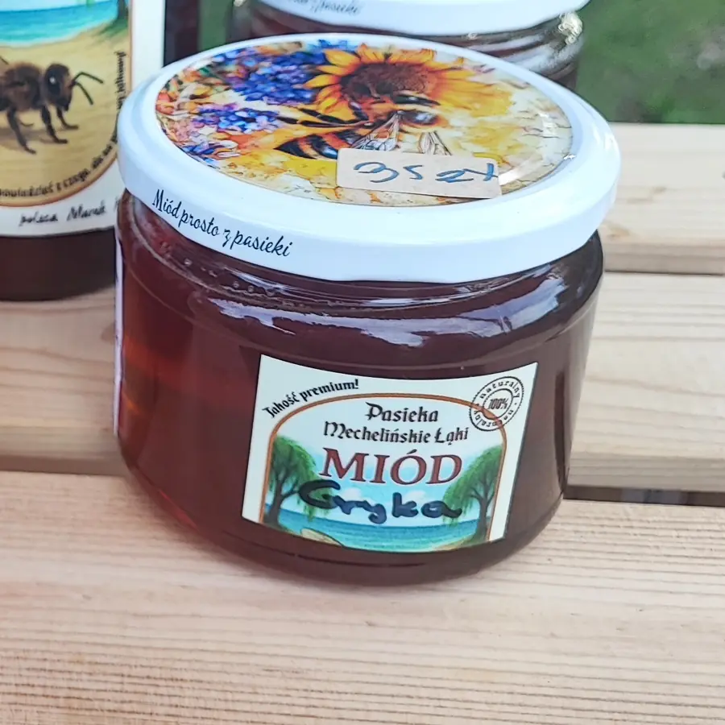

Strona główna — Miody tego sezonu
Miody tego sezonu
Każdy słoik podpisuję ręcznie, więc wiadomo, z którego miodobrania pochodzi. Odmiany zmieniają się w rytm kwitnienia — pod koniec sezonu lista bywa krótsza.

-
Wielokwiatowy
Zapach łąki tuż po wschodzie słońca. Łagodny, uniwersalny — do herbaty, na pieczywo, dla dzieci.
-
Rzepakowy
Jasny i szybko krystalizujący na kremową masę. Najlepiej smakuje wprost z łyżeczki.
-
Lipowy
Mocno aromatyczny, z lekką goryczką. Klasyczny wybór na jesienne wieczory z herbatą.
-
Spadziowy
Ciemny, gęsty, żywiczny. Mało słodki, o smaku, który zostaje na długo.
-
Nawłociowy
Ostatni miód sezonu, zbierany z sierpniowych nieużytków. Wyraźny, lekko kwaśny finisz.
Słoiki 350 g, 900 g i 1,2 kg. Odmiany podpisuję ręcznie na etykiecie, więc wiadomo, z którego miodobrania pochodzi słoik.

Krystalizacja to dobry znak
Każdy naturalny miód prędzej czy później zmienia się w masę — jedne odmiany po kilku tygodniach, inne po kilku miesiącach. To dowód, że miód nie był podgrzewany ani filtrowany pod ciśnieniem.
Jeśli wolisz płynny, wstaw słoik do wody o temperaturze ciała i odczekaj. Powyżej 40 °C miód traci to, po co się go kupuje, więc nie warto się spieszyć.
Przechowuj w zamkniętym słoiku, w ciemnym miejscu, z dala od kaloryfera. Miód nie psuje się latami, ale chłonie zapachy i wilgoć.
Miód kupisz o każdej porze
Wszystkie odmiany, które akurat mam, trafiają do miodomatu przy Bukszpanowej 4 w Mostach.